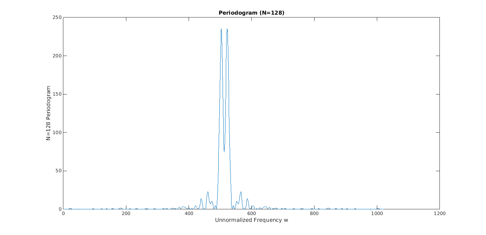
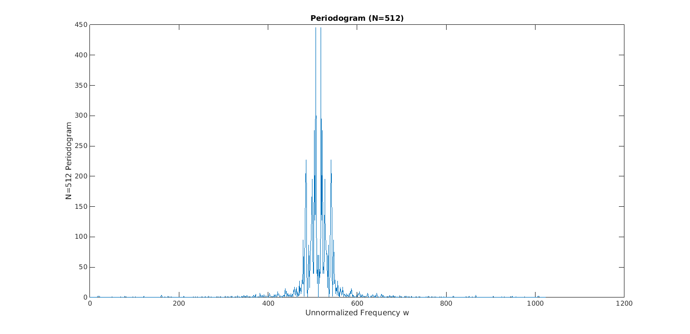
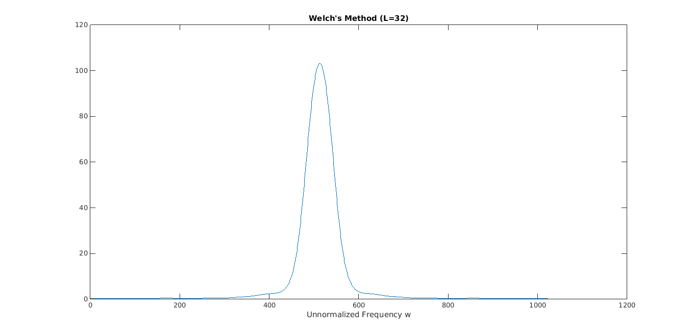
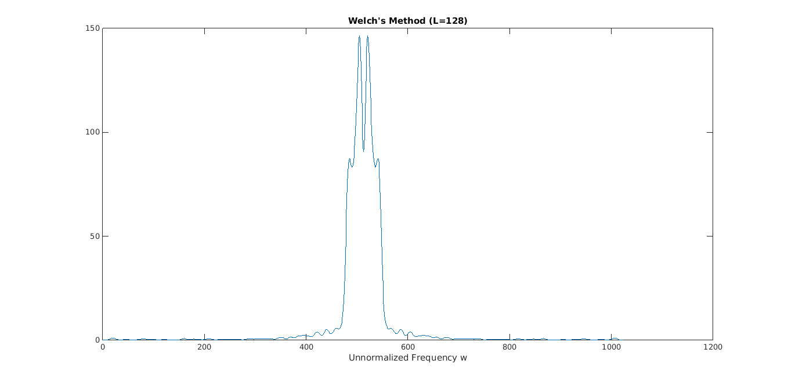
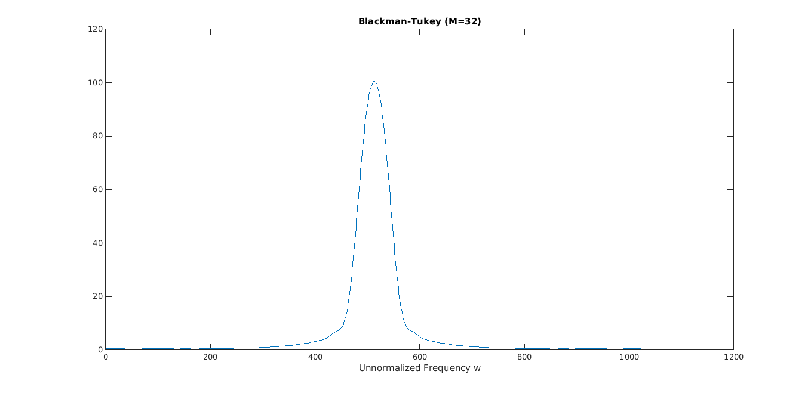
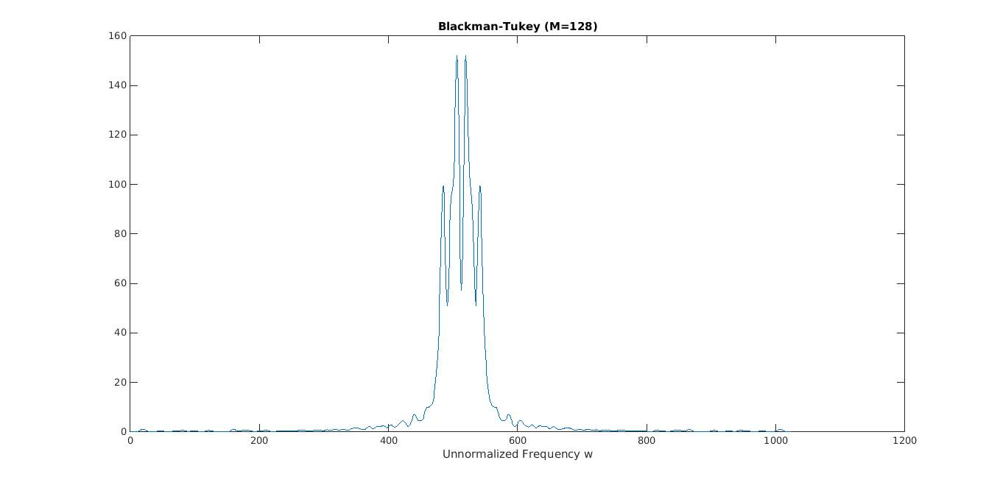
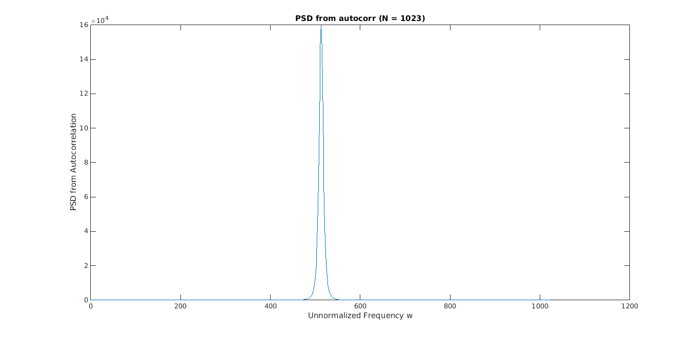
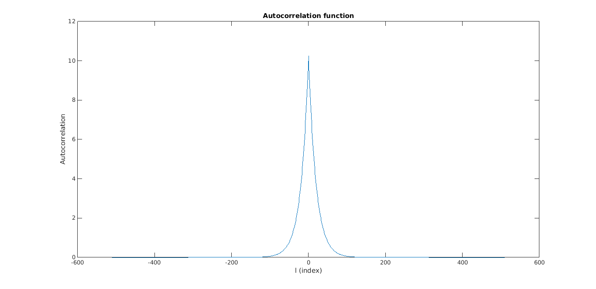
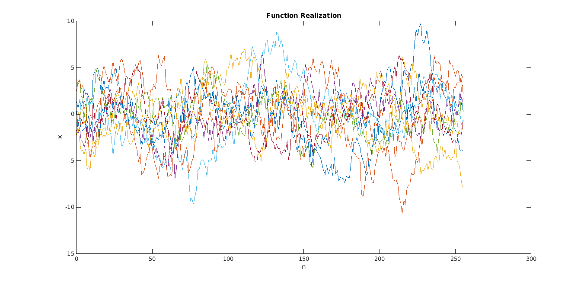
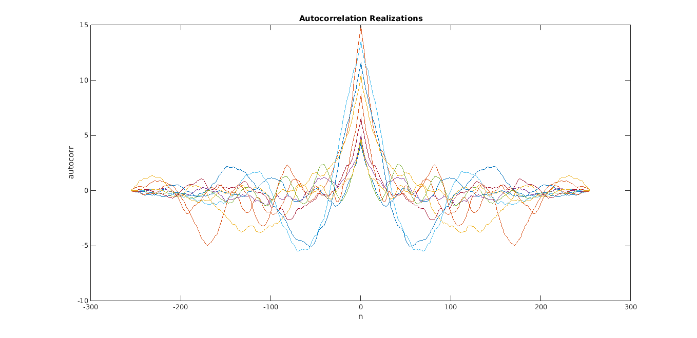

EE 779 : Assignment 1
Meet Pragnesh Shah, 13D070003
Contents
clear all; close all;
Initialization and Reading the signal from DAT file
signal = getdata('../data/S01.DAT');
fft_length = 1024;
sig = 1;
rho = 0.95;
no_of_realizations = 10;
Periodogram Method
[per128, per512] = psd_periodogram(signal, fft_length);
% Plotting
plot_periodogram(per128, per512);
  Periodogram Analysis
The resolution increases as we increase N, as we can see that closely related frequency components are resolved in the plot. The variance remains same and doesn't change with N. The PSD is smmoother in case of low N, as with increasing N, the noise also gets amplified and we can see spikes.
Welch method
[wel32, wel128 ] = psd_welch(signal, fft_length);
% Plotting
plot_welch(wel32, wel128);
  Welch Method Analysis
The resolution increases as we increase L, as we can see that closely related frequency components are resolved in the plot. The variance is less with lower values of L (i.e higher values of K). This can be seen in the plots as the plot for L=32 is much smoother than plot for L=128 We can thus clearly explain the tradeoff between resolution and variance.
Blackman-Tuckey method
[blt32, blt128 ] = psd_blackman_tuckey(signal, fft_length);
% Plotting
plot_blackman_tuckey(blt32, blt128);
  Blackman-Tuckey Method Analysis
The resolution increases as we increase M, as we can see that closely related frequency components are resolved in the plot. The variance is less with lower values of M (i.e higher values of K). This can be seen in the plots as the plot for M=32 is much smoother than plot for M=128 We can thus clearly explain the tradeoff between resolution and variance.
Comparing estimates with ground truth (autocorrelation)
[psd_acorr, rx] = psd_autocorr(fft_length, sig, rho);
Overall Analysis
Methods of PSD estimation can be compared on the trade-off offered by them between variance and resolution.
Periodogram Method
Worst performance amongst all given methods, it uses large number of short blocks for estimation to reduce the variance , but with shortening of the blocks resolution is lost.
Welch Method
Better than periodogram, it uses overlapping which gives more blocks of a given length leading to a better resolution alongside a reduced variance.
Blackman-Tuckey
Best of all, it uses smoothening of a single periodogram to reduce variance without significantly affecting resolution and hence the resolution-variance tradefoff is best.
% Plotting
plot_autocorr(psd_acorr, rx);
  Realizations of Process using difference equations
realize_process(no_of_realizations, fft_length); 